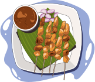
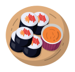

Pencarian Restoran
Mencari restoran berdasarkan berbagai kriteria
Segera nikmati petualangan kuliner Anda dan buat kenangan tak terlupakan bersama kami.

+
2,500 user merasa puas dengan rekomendasi kami
Selamat datang di pusat eksplorasi rasa kami. Temukan berbagai pilihan restoran terbaik di kota, dari masakan lokal yang autentik hingga hidangan internasional yang menggoda selera.
Temukan layanan kami yang memudahkan dan menyenangkan pengalaman makan Anda
Mencari restoran berdasarkan berbagai kriteria
Memberikan ulasan dan peringkat restoran setelah mengunjunginya
Memesan meja secara online di restoran yang berpartisipasi
Informasi lengkap tentang setiap restoran
Temukan kelezatan dari berbagai masakan dunia
2 Resto
2 Resto
2 Resto
3 Resto
Nikmati pengalaman kuliner terbaik dengan restoran-restoran yang sangat direkomendasikan
Eksplorasi visual restoran kami melalui foto-foto menawan
Dengarkan pandangan pengguna tentang kualitas dan kehandalan informasi yang kami sediakan
Mahasiswa
Saya sering bingung mencari restoran yang cocok, tetapi website ini membuatnya mudah.
Food Plogger
Website ini sangat membantu saya dalam menjelajahi restoran-restoran terbaik di kota.
Karyawan
Saya mencintai konsep website ini. Mudah digunakan dan memiliki tampilan yang menarik.